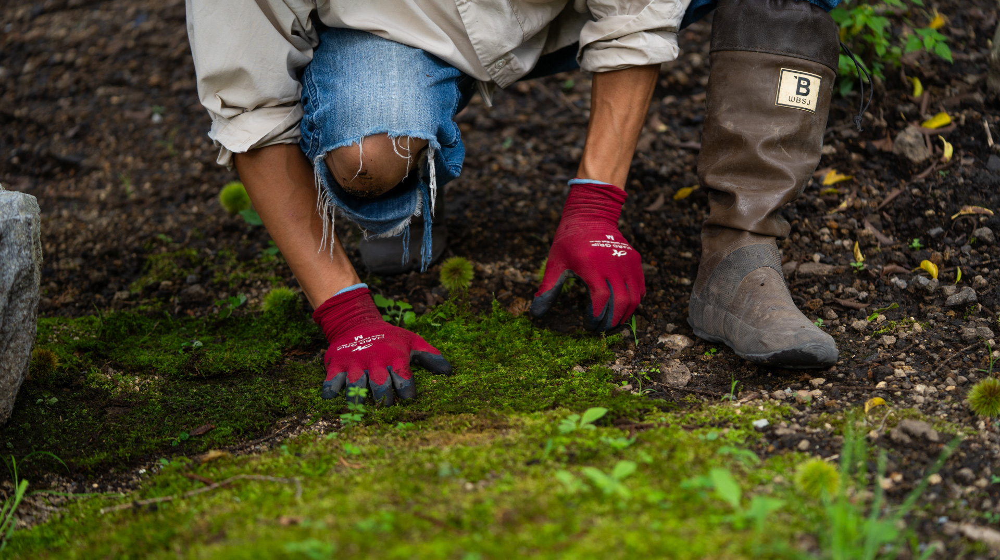
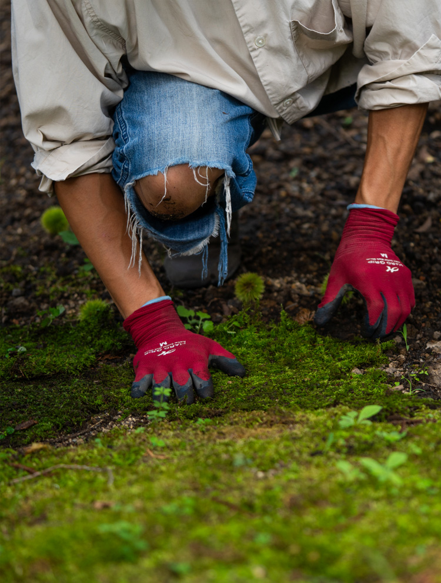
おもてなし
HERITAGE AND
THE SPIRIT OF CRAFTSMANSHIP
CRAFTSMANSHIP自然と調和する「MORIASOBI」
軽井沢 長倉エリアの魅力
「暮らしと自然が調和する場所」
-
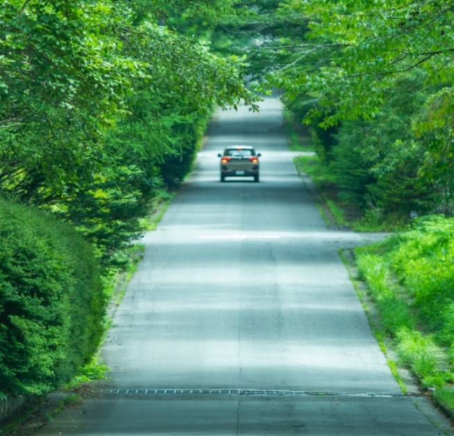
image photo -
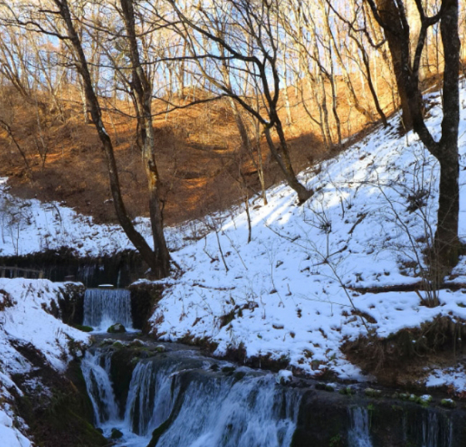
image photo
軽井沢は、都会の喧騒を忘れさせる自然豊かな環境と、観光地としての華やかさが融合する特別な場所です。ここに住むことで、四季の移ろいを肌で感じ、心地よい安らぎを得ることができます。特に、お盆を過ぎた涼しい風が夏の終わりを告げる瞬間は、印象的です。
中でも長倉エリアは、暮らしと楽しみのバランスが取れた場所で、観光地としての賑わいから一歩離れた静かな生活を提供しています。近年、このエリアでは暮らしを重視したプロジェクトが進行中で、さらなる発展が期待されています。軽井沢は、ただの観光地ではなく、自然と調和した豊かな暮らしを提供する場所です。そして長倉エリアは、その理想的な生活を実現するための最適な環境を提供しています。
NEWS & TOPICS
New Release in Karuizawa Area

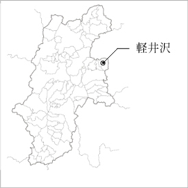
- （仮称）軽井沢長倉プロジェクト
日本エスコンは下記の通り、長野県北佐久郡軽井沢町において、新規事業用地の取得を行いましたのでお知らせいたします。
当該新規事業用地は、しなの鉄道・北陸新幹線「軽井沢」駅まで車で約10分、最寄りの「碓氷軽井沢 IC」からもアクセスしやすい塩沢エリアに位置します。
会員様には、最新情報や
特別な商談機会をいち早くお届けします。
MORIASOBIが提案する、
自然と調和したアウトドアリビング

軽井沢の豊かな自然に囲まれた「MORIASOBI」は、アウトドアリビングの新しい形を提案するブランドです。日本ではまだ馴染みの薄い「アウトドアリビング」というコンセプトを軸に、室内と外部空間をシームレスに繋ぎ、自然と調和した暮らしを提案しています。MORIASOBIのテーマは「森に集い、森と遊び、森と暮らす」。この理念のもと、ハルニレテラスにあるフラッグシップショップでは、テラススペースや庭を豊かに彩る家具や雑貨を販売し、さらに庭造りやウッドデッキの施工まで、トータルなコーディネートを提供しています。
軽井沢の気候や自然に配慮しながら、ナチュラルで洗練された空間を作り上げることがMORIASOBIのこだわりです。お客様のライフスタイルに寄り添いながら、四季折々の風景に溶け込むようなデザインと機能性を持つ空間作りを目指しています。MORIASOBIの空間づくりは、単なるデザインや施工ではなく、軽井沢という場所に根ざした「心豊かな暮らし」を実現するための提案です。自然と人との調和を重視し、四季折々の美しさを取り入れた空間は、お客様にとって特別な場所となるでしょう。
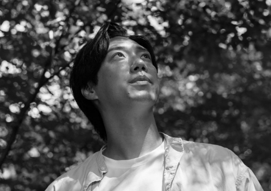
モリアソビ代表 プランニングディレクター
船倉 裕作（ふなくら ゆうさく）
合同会社Wakeman 代表社員
株式会社WakemanLand 代表取締役
1992年2月生まれ、2017年ホテルでのアルバイトを機に神奈川県より移住。「森に集い、森と遊び、森と暮らす」を仲間とともに体験し、緑ある暮らしのほか、土と触れ合う農のある暮らしを通して自然と調和した暮らしをお客様に提案する。
-
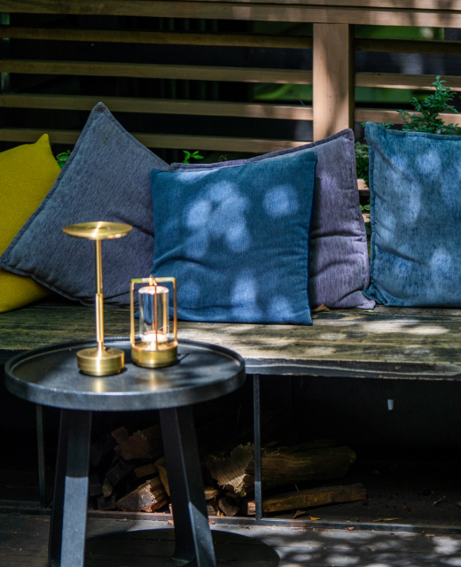
-
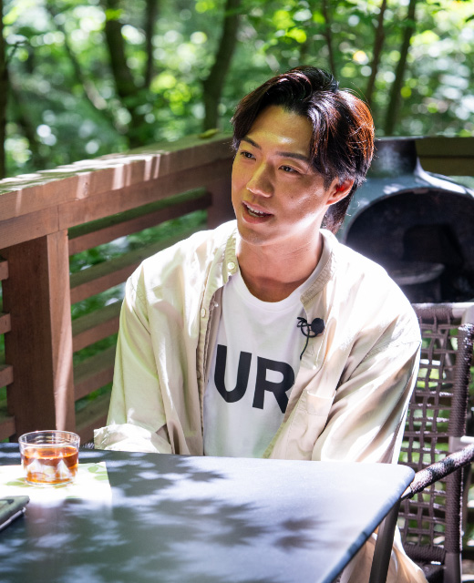
軽井沢の自然を活かした、
心豊かな空間づくりへのこだわり
軽井沢の特有の自然環境を活かし、心を豊かにする空間を提案することがMORIASOBIの使命です。夏の涼しさと冬の厳しい寒さが共存する軽井沢では、寒さに強い植物や、厳しい冬に耐えるサーモ加工されたデッキ材など、四季に応じた素材選びが重要です。さらに、新たに植える植物が既存の自然に馴染むように配慮し、自然と人が共に過ごしやすい空間を作り上げることを大切にしています。
また、軽井沢に集まる観光客、地元住民、別荘所有者、移住者など多様な人々が自然の魅力を最大限に楽しめる空間を提供することも重要です。訪れる人々が「ここに住んでよかった」「この場所に訪れてよかった」と感じられる空間づくりを通じて、MORIASOBIは自然と共に生きる豊かな暮らしをサポートしています。
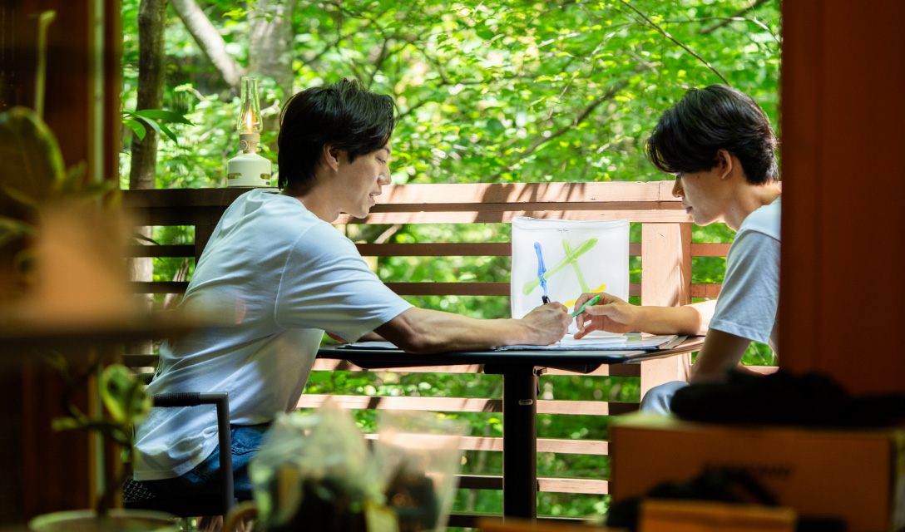
MORIASOBIの原動力
「自然と人をつなぐ空間づくり」
MORIASOBIの活動の原動力は、軽井沢の自然を感じ、その魅力を最大限に楽しめる空間を提供することです。訪れる方々が自然の中で心地よさを感じ、またこの場所に戻ってきたいと思えるような空間作りをすることが、私たちの活動の核となっています。
観光客にとっては、一瞬の安らぎを与える場所を提供し、また訪れたいと思わせることが重要です。一方で、別荘所有者や移住者にとっては、長年の夢を叶えるサポートを行い、その方々が「ここに住んでよかった」と感じられるような空間を提供することが私たちの喜びです。MORIASOBIが目指すのは、自然と調和した空間作りを通じて、人々の生活を豊かにすることです。
-
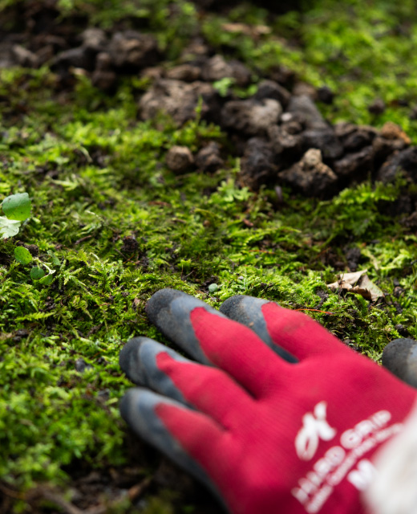
-
MORIASOBIの想い
「自然と共にある
豊かな暮らしを創造する」
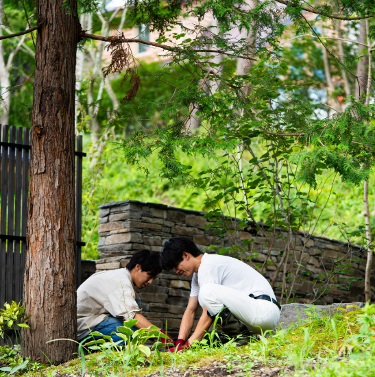
MORIASOBIは、軽井沢に集まった仲間たちが自然と共に生きる暮らしを探求し、その経験をもとに提案を行うブランドです。私たちのビジョンは、自然と調和した豊かな暮らしを、訪れる人々や地元の住民と共に築き上げていくことです。
MORIASOBIは最初、ショップとしてスタートしましたが、次第に造園工事や施工にも取り組むようになり、場所探しから提案、実際の空間作りまでをトータルにサポートしています。私たちは、大きな野望を掲げるのではなく、出会う人々とのご縁を大切にし、共に「心地よい暮らし」を見つけ、育んでいくことを目指しています。「森に集い、森と遊び、森と暮らす」というコンセプトを体現しながら、MORIASOBIはお客様と共に、少しずつ大きな森を育てていくことを大切にしています。
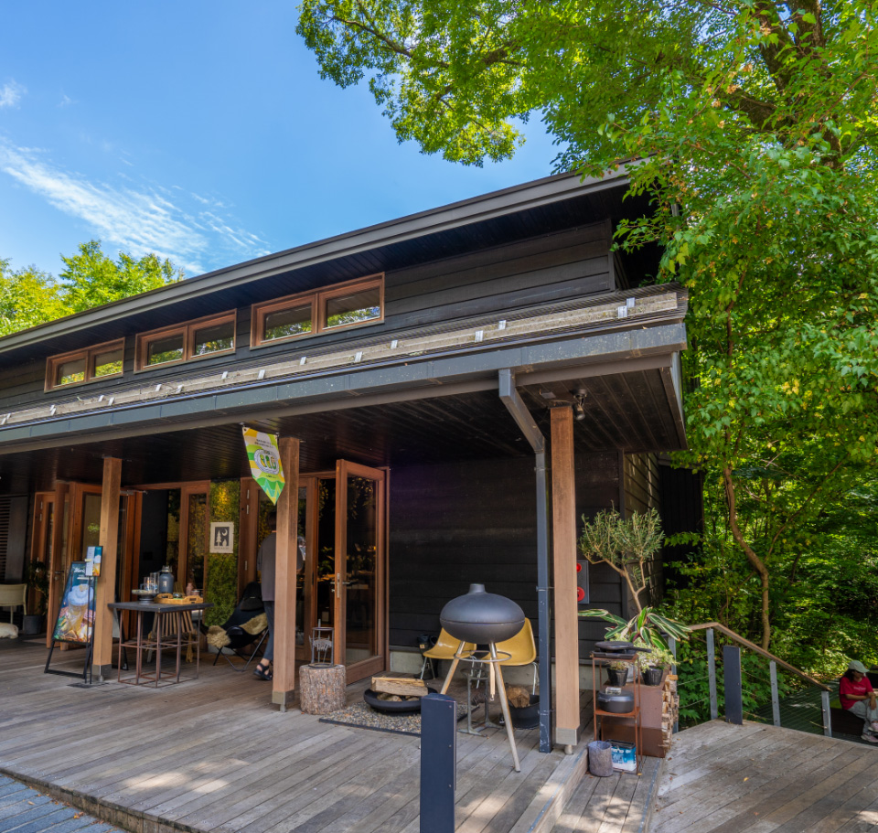

New Release in Karuizawa Area

日本エスコン
軽井沢エリアにおける新規取得事業用地
（仮称）軽井沢長倉プロジェクト
会員様には、最新情報や
特別な商談機会をいち早くお届けします。
※掲載のクラフトマンの写真・映像、記事は、2024年8月に取材撮影したものです。 ※掲載の地図は略図のため、省略されて表現されています。